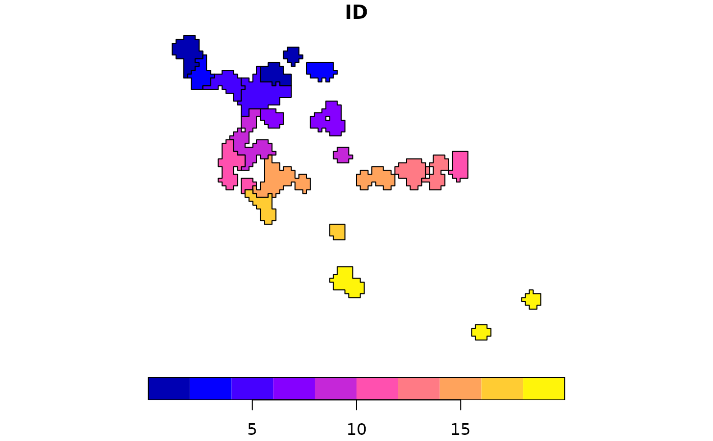

Sample a species based on Isolation by Geographic Distance (IBD)
IBDBasedSample.RdCreate n seed collection areas based on the distance geographic (great circle) distance between points.
Arguments
- x
a Raster surface to sample the points within, e.g. the output of SDM$Supplemented.
- n
Numeric. the number of clusters desired.
- fixedClusters
Boolean. Defaults to TRUE, which will create n clusters. If False then use NbClust::NbClust to determine the optimal number of clusters.
- n_pts
Numeric. the number of points to use for generating the clusters, these will be randomly sampled within the mask area
mask. Defaults to 1000, which generally allows for enough points to be split for the KNN training.- template
Raster. A raster file which can be used as a template for plotting.
- prop_split
Numeric. The proportion of records to be used for training the KNN classifier. Defaults to 0.8 to use 80% of records for training and 20% for the independent test sample.
- min.nc
Numeric. Minimum number of clusters to test if fixedClusters=FALSE, defaults to 5.
- max.nc
Numeric. Maximum number of clusters to test if fixedClusters=FALSE, defaults to 20.
Value
An simple features (sf) object containing the final grids for saving to computer. See the vignette for questions about saving the two main types of spatial data models (vector - used here, and raster).
Examples
planar_proj =
'+proj=laea +lon_0=-421.171875 +lat_0=-16.8672134 +datum=WGS84 +units=m +no_defs'
x <- read.csv(file.path(system.file(package="dismo"), 'ex', 'bradypus.csv'))
x <- x[,c('lon', 'lat')]
x <- sf::st_as_sf(x, coords = c('lon', 'lat'), crs = 4326)
x_buff <- sf::st_transform(x, planar_proj) |>
sf::st_buffer(125000) |> # we are working in planar metric coordinates, we are
sf::st_as_sfc() |> # buffer by this many / 1000 kilometers.
sf::st_union()
files <- list.files( # note that for this process we need a raster rather than
path = file.path(system.file(package="dismo"), 'ex'), # vector data to accomplish
pattern = 'grd', full.names=TRUE ) # this we will 'rasterize' the vector using terra
predictors <- terra::rast(files)
# this can also be done using 'fasterize'. Whenever
# we rasterize a product, we will need to provide a template raster that our vector
# will inherit the cell size, coordinate system, etc. from
x_buff.sf <- sf::st_as_sf(x_buff) |>
dplyr::mutate(Range = 1) |>
sf::st_transform(terra::crs(predictors))
# and here we specify the field/column with our variable we want to become
# an attribute of our raster
v <- terra::rasterize(x_buff.sf, predictors, field = 'Range')
# now we run the function demanding 20 areas to make accessions from,
ibdbs <- IBDBasedSample(x = v, n = 20, fixedClusters = TRUE, template = predictors)
#> Warning: coordinate ranges not computed along great circles; install package lwgeom to get rid of this warning
#> Loading required package: ggplot2
#> Loading required package: lattice
#> Warning: st_point_on_surface may not give correct results for longitude/latitude data
plot(ibdbs)
